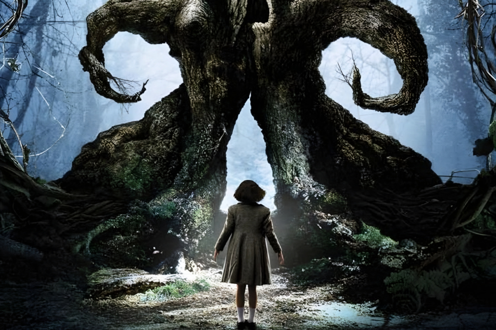

Fantasía oscura
Ocho historias con mundos imaginarios, criaturas y misterios.
El laberinto del fauno
Ofelia descubre un laberinto y conoce a un fauno que le propone superar pruebas en un mundo fantástico.
En esta categoría también encontrarás Sleepy Hollow, Constantine, La forma del agua y otras historias oscuras.
Explorar las ocho películas